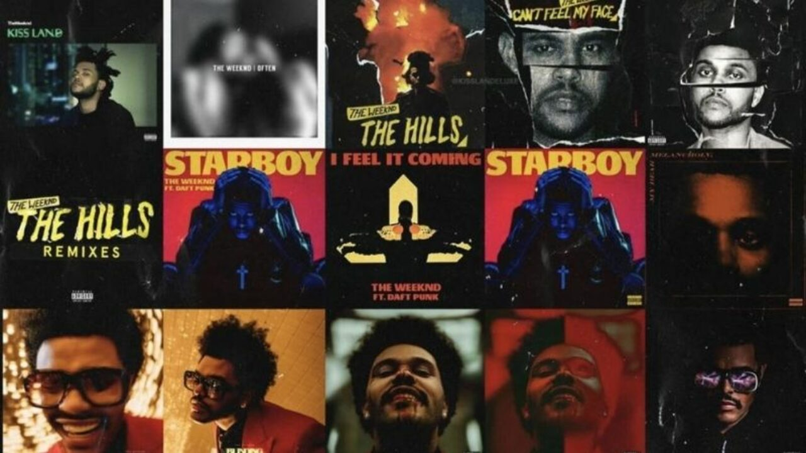
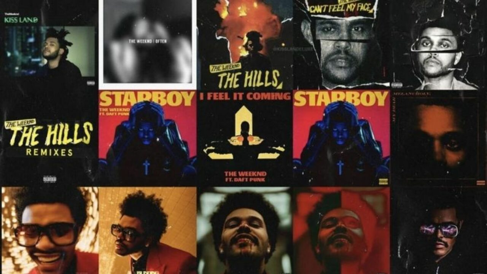

The Weeknd, byname of Abel Makkonen Tesfaye, (born February 16, 1990, Toronto, Ontario, Canada), Canadian rhythm-and-blues singer and songwriter who was perhaps best known for his explicit songs about sex and drugs, many of which were autobiographical, and for his soaring falsetto and its singular tremolo.The Weeknd subsequently asked his record company for help in crafting songs. The outcome was a professional relationship with the hit-making Swedish producer Max Martin and a duet with pop star Ariana Grande, “Love Me Harder.” The song, released in 2014, reached the top 10. The Weeknd's next three hit singles, “Earned It,” “The Hills,” and “Can't Feel My Face,” were featured on Beauty Behind the Madness (2015). In 2016 The Weeknd won Canada's Juno Award for artist of the year for the second consecutive year, as well as four other Junos, including album of the year. He also won Grammy Awards for best R&B performance for “Earned It,” and Beauty Behind the Madness took the award for best urban contemporary album. In addition, “Earned It,” which was included on the sound track of the film Fifty Shades of Grey (2015), was nominated for an Academy Award in 2016.
 
